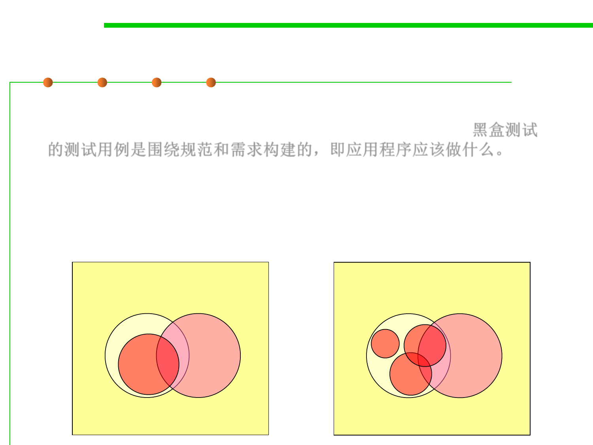

7.5 Testing and Test-First Programming
Test cases for black-box testing
▪ Test cases for black-box testing are built around specifications and
requirements, i.e., what the application is supposed to do.黑盒测试
的测试用例是围绕规范和需求构建的，即应用程序应该做什么。
▪ Test cases are generally derived from external descriptions of the
software, including specifications, requirements and design
parameters. Although the tests used are primarily functional in
nature, non-functional tests may also be used.
Spec.
Program
Spec.
Program
Test Case
Test Cases